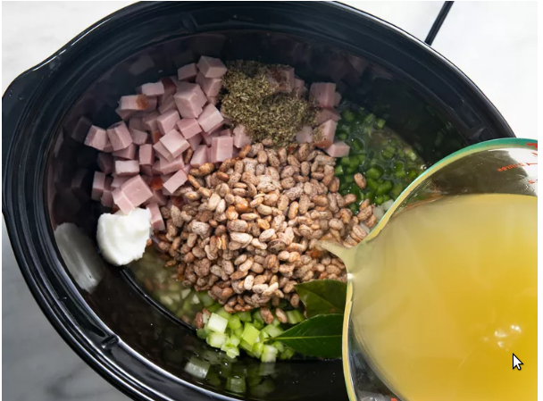

Slow Cooker Pinto Beans
This butter chicken recipe, or chicken makhani, is one of my favorite Indian dishes. It features a full-flavored sauce that complements the chicken well. It can be made as mild or spicy as you wish by adjusting the cayenne. Serve with basmati rice and naan bread

Follow the steps below to make Slow Cooker Pinto Beans
- Place beans in a large bowl and cover with water. Allow to soak 8 hours to overnight. Drain.
- Gather all ingredients.
- Place soaked pinto beans in a slow cooker. Add ham, onion, bell pepper, celery, garlic, oregano, lard, cumin, and bay leaves. Pour in enough chicken broth to cover all ingredients.
- Pour in enough chicken broth to cover all ingredients.
- Cook on High until beans are very tender, 5 to 6 hours.